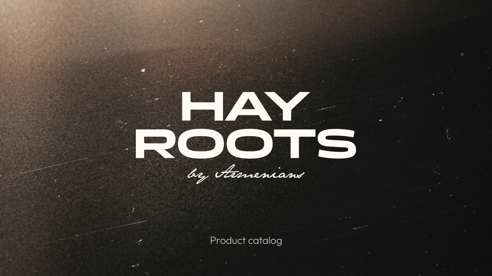
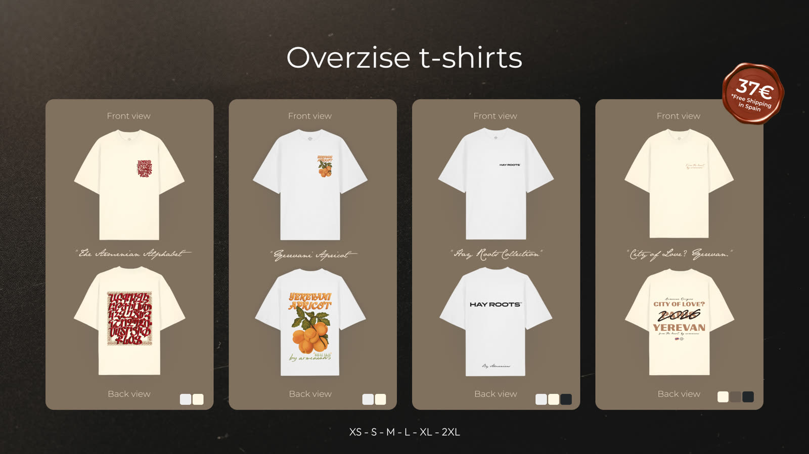
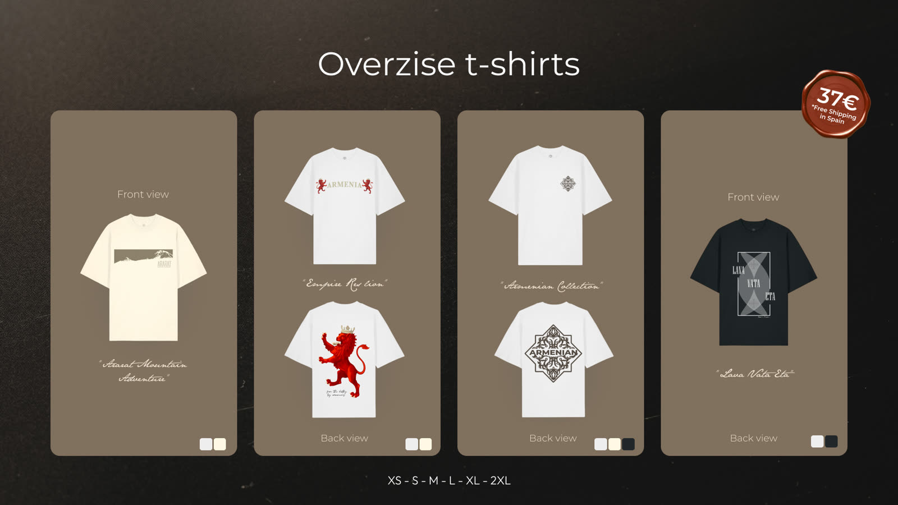
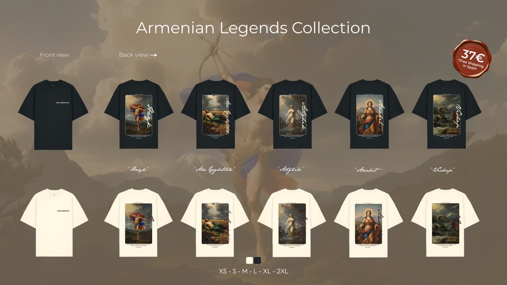
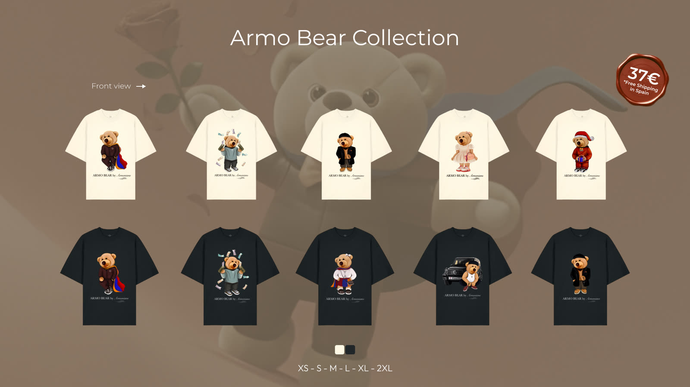
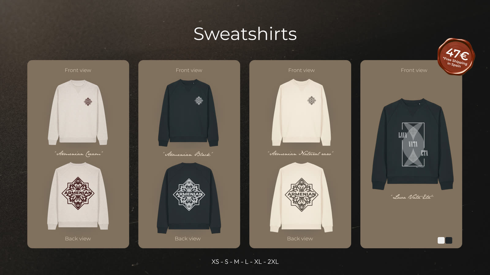
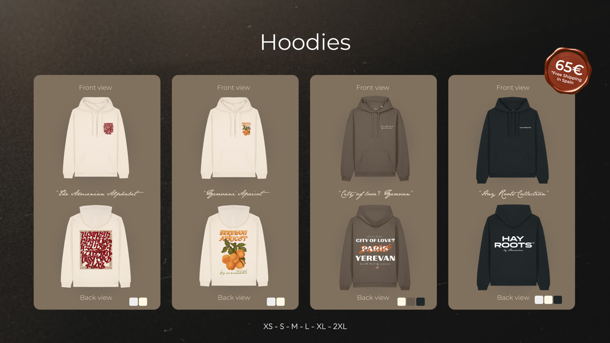
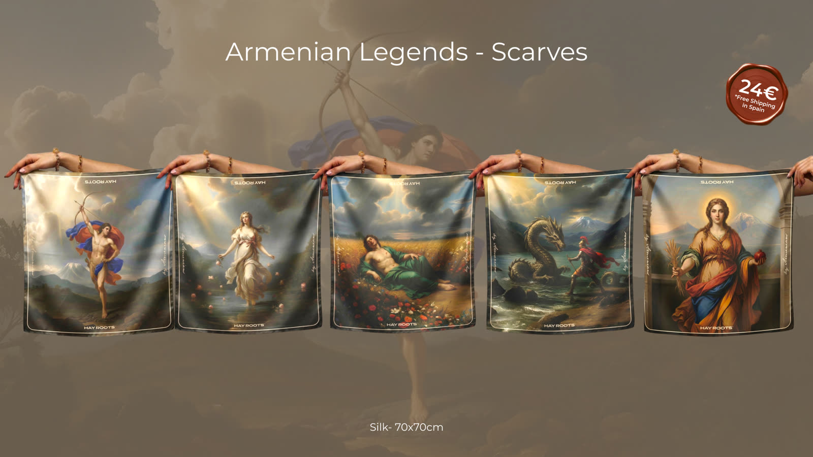
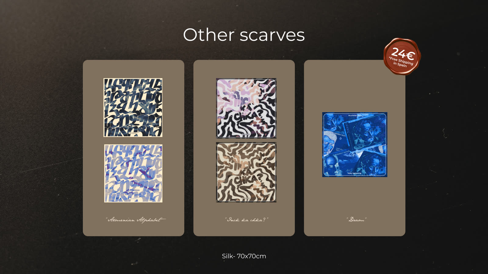
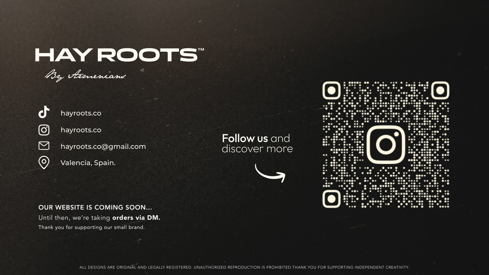

“Design is imagination made real— Diana Gals
to hold, to wear, to live in.”
I’m a Graphic, Brand, Web and 3D
Designer, specializing in branding,
visual identity, creative direction,
and immersive digital design.
From branding and editorial design to
AI-driven
visuals and immersive storytelling,
these projects reflect my passion
for creating meaningful visual experiences.
Interact with the Polaroids!










Hay Roots is an independent fashion and design brand inspired by Armenian culture — apparel, silk scarves and packaging that turn mythology and heritage into contemporary wearable art.
Visit the shopI help brands and creators build digital experiences that feel clear, modern and effortless to use.
Refined websites and visual systems where layout, typography and graphic detail work as one — clean, modern interfaces with bold visual identity behind them.
The core visuals of a brand — logotypes, typography, palettes and systems that make the brand memorable and unmistakably its own.
Photorealistic 3D, product scenes and visual storytelling that turn a product into a feeling — for editorial, ads and brand campaigns.
Editorial layouts, illustrated books and original drawings — from full-volume art direction to single-piece illustrations, treated as objects to be read, kept and loved.
A few of my projects that have been recognised along the way.
Winner of a short-narrative literary contest in Valencia, selected as one of five authors whose pieces were collected and published in the official anthology El batec del cor.
My Final Degree Project: an illustrated book about Armenian art, history and culture — conceived as a piece of inspiration for artists, designers and anyone drawn to the heritage behind it.
Have a project in mind? Let's make it real.
I'm always open to collaborations and creative challenges. Reach out and I'll usually reply within 24 hours.